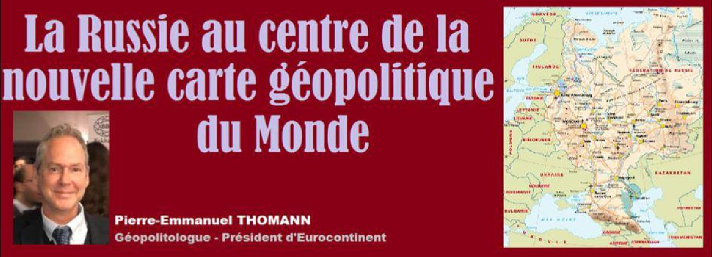
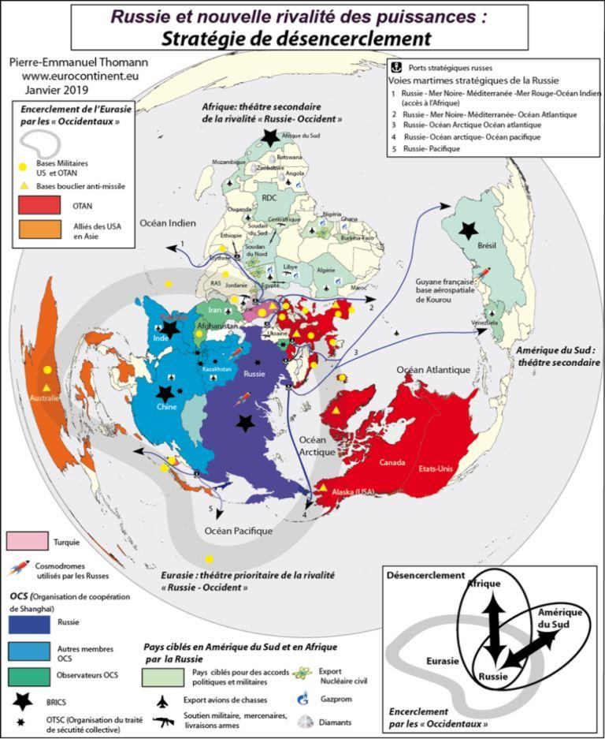
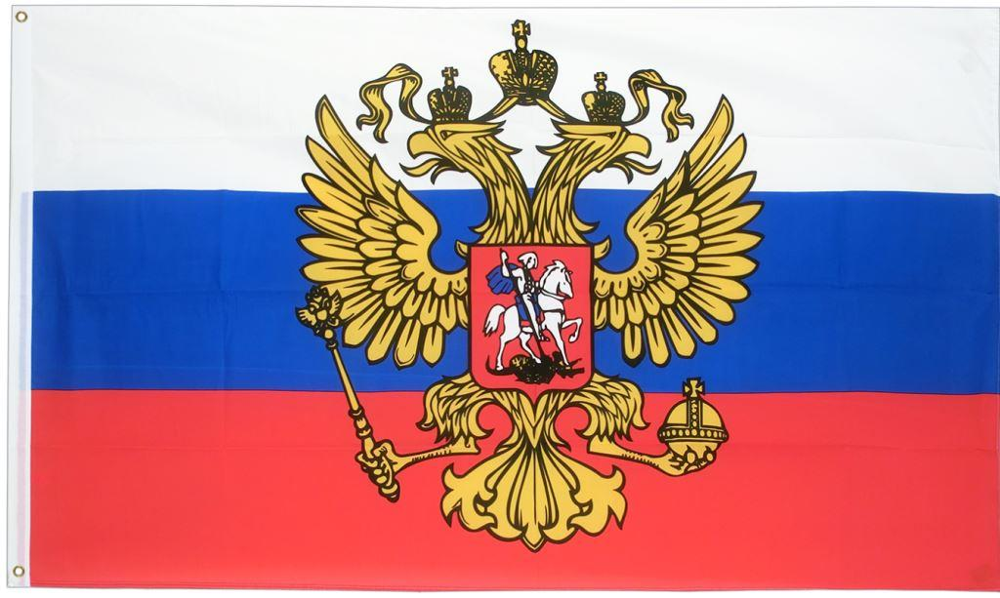
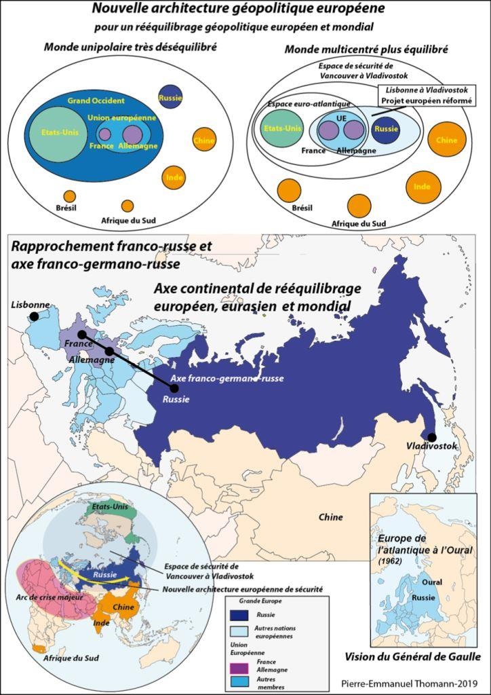
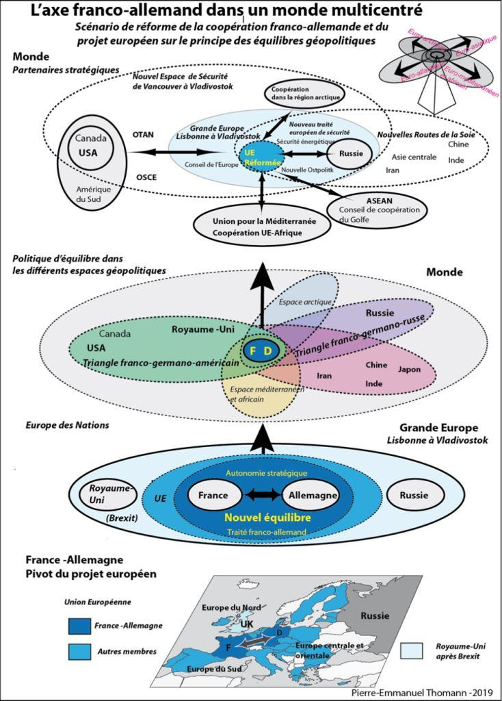

La Russie au centre de la nouvelle carte géopolitique du Monde
par Pierre-Emmanuel THOMANN

Pour esquisser un bilan géopolitique de la politique extérieure russe depuis les années 2000, le préalable est de chercher à se placer le plus proche possible du point de vue de la Russie. En géopolitique, cela signifie chercher à comprendre les enjeux qui touchent la Russie à partir de sa position géographique, et donc mettre la Russie au centre de la carte géopolitique.
Nous allons nous concentrer sur l'angle des enjeux géopolitiques et géostratégiques, avant tout, même si les enjeux économiques sont aussi très importants.
La Russie est incontournable pour la sécurité en Europe mais aussi dans toute l'Eurasie. Cela est dû à sa position géographique, car le territoire de la Russie est contigu avec tous les théâtres de crises majeurs dans le monde.
La Russie a dû faire face à une situation géopolitique dégradée après la fin de la guerre froide. La Russie après la dissolution de l’URSS, où elle occupait une position centrale, a subi une perte conséquente de territoires stratégiques. Les changements de frontières ont eu pour conséquence un rétrécissement du territoire de la Russie, le ramenant à une situation antérieure à la période de la Tsarine Catherine II au XVIIIème siècle1. Une partie de la population russe s’est aussi retrouvée dispersée dans de nouveaux États adjacents à la Russie.
LA RÉAFFIRMATION DE LA RUSSIE COMME PÔLE GÉOPOLITIQUE DANS LE MONDE MULTICENTRÉ
La Russie après la disparition de l'URSS avait espéré trouver une place dans la maison commune européenne, mais sur un pied d'égalité avec les autres nations européennes. Cette vision a échoué, après l'insistance des gouvernements des pays membres de l'UE et de l'OTAN à vouloir « occidentaliser » la Russie et ne lui réserver qu'un rôle secondaire dans l'espace euro-atlantique. Après la déception initiale, la réaction russe pour maîtriser à nouveau son destin a surpris les Occidentaux.
La réaction russe contre sa marginalisation depuis la chute de l’URSS s’est manifestée en trois phases depuis l’arrivée à la présidence russe de Vladimir Poutine (premier mandat : 31 décembre 1999 – 26 mars 2000 et ensuite jusqu’au 7 mai 2008) : la lutte contre les oligarques à partir des années 2000, avec la mise au pas emblématique de Mikhaïl Khodorkovski, ex-patron du groupe pétrolier Ioukos, la reprise en main énergétique de la compagnie d’État Gazprom sur les ressources russes et les infrastructures avec la crise du gaz en 2006 et 2009 avec l’Ukraine, la seconde guerre de Tchétchénie en 1999 en tant que président du gouvernement et la guerre Russie-Géorgie en 2008 en tant que premier ministre sous la présidence de Dimitri Medvedev.
L’année 2007 a marqué aussi un retour de la Russie au niveau international. Le ministre des Affaires étrangères russe a confirmé la suspension par la Russie de l’application du traité sur les Forces conventionnelles en Europe (FCE) signé en 1990 et adapté en 1999, qui limitait les déploiements militaires sur le continent, en réponse à la sortie unilatérale des États-Unis du traité ABM en 2002 et au projet de bouclier anti-missile américain.
Vladimir Poutine, à l’occasion de son discours à la 43e conférence de Munich le 2 octobre 20072, a dénoncé l’extension de l’Alliance atlantique aux frontières de la Russie, contrairement aux promesses faites lors des négociations sur la réunification allemande. Le secrétaire général de l’OTAN et des chefs d'État et de gouvernement des États membres de l'OTAN ont laissé entendre qu'il n'y aurait pas d'élargissement supplémentaire de l'Alliance vers l'est après l'unification allemande, même si rien n'a été écrit dans un traité3. Cela a été interprété par les Russes comme une promesse ferme. Depuis la dissolution de l'URSS, l'OTAN s'est pourtant continuellement élargie jusqu'aux frontières de la Russie.
Comme l'emblème russe, l'aigle à deux têtes, le suggère, les Russes cherchent à rester un pôle de puissance selon une stratégie eurasienne multidirectionnelle. L’objectif des Russes est de rester un État incontournable dans l’espace occupé autrefois par l’ex-URSS pour leur sécurité et leur prospérité afin de compter aux échelles Eurasienne et mondiale.
À l’Est, la Russie est membre de l’Organisation de Coopération de Shanghai (OCS) et l’Organisation du traité sur la Sécurité collective (OTSC). À l’Ouest, la Russie était intégrée au partenariat pour la paix de l’OTAN, et siège au Conseil OTAN-Russie. Cette dernière enceinte ne lui a donné par contre aucune influence sur les décisions de l’OTAN. Depuis le différend à propos de l'Ukraine, le dialogue a été rompu avec la suspension du Conseil OTAN-Russie puis a repris mais de manière très ténue.
La vente de pétrole et de gaz à la Chine et au Japon a permis à la Russie de gagner en marge de manœuvre. La manœuvre russe vers l’Est est aussi destinée à négocier avec plus de poids avec l’Ouest. La Russie veut donner de gages à l'Est afin de négocier, quand le moment sera plus favorable, un espace de sécurité européen. La position géographique de la Russie lui permet de pratiquer l'équilibre entre l'Est et l’Ouest.
La politique poursuivie par les Occidentaux de tentative d'isolement de la Russie depuis la crise en Ukraine pousse toujours plus la Russie à s'orienter vers l'Est et non pas l'Ouest. Cette approche est donc contreproductive et ne correspond pas aux intérêts de long terme des nations européennes.
L'IMPLICATION DE LA RUSSIE DANS LES ZONES DE CRISE ADJACENTES : GÉORGIE, UKRAINE, SYRIE
Le fait que la Russie ai été partie prenante dans les trois conflits, en Géorgie, Ukraine et Syrie est logique, car on l'a dit, le territoire de la Russie est géographiquement contigu avec toutes les zones de tensions mondiales. La Russie, comme tout État, cherche à protéger sa sécurité et sa prospérité. Elle n'a donc pas d'autre choix que de défendre son point de vue sur ses zones d'intérêt prioritaires.
Au niveau mondial, c’est aussi la Russie qui porte de manière la plus active le projet d’un monde multipolaire dans le contexte de la mondialisation qui se résume de plus en plus à une lutte de répartition des espaces géopolitiques.
Pour la Russie, il s'agit avant tout d'éviter que le projet unipolaire euro-atlantiste sous leadership des États-Unis ne s'impose. La Russie cherche au contraire à promouvoir un monde multicentré afin que la Russie ai un rôle de chef de file en particulier dans sa zone d'intérêts prioritaires au niveau régional. Il ne s'agit pas de recréer une puissance équivalente à l'URSS ni de rétablir un monde bipolaire. La Russie n'en a ni les moyens, ni l'ambition, mais un meilleur équilibre géopolitique.
La Russie considère que la politique d’élargissement de l’Alliance atlantique soutenue par les États-Unis et ses alliés, couplée au positionnement des bases américaines et des infrastructures du bouclier anti-missile autour de l'Eurasie, a pour objectif son encerclement4. La Russie a démontré lors de ces différents conflits qu’une intrusion dans sa sphère d’intérêts provoquait désormais une réaction.
L’objectif prioritaire de la Russie de desserrer la pression exercée par l’Alliance atlantique est atteint car sur le théâtre européen, la Russie a réussi à enrayer l'extension de l'OTAN à l'Ukraine et la Géorgie. Dans le cas de la Géorgie et de l’Ukraine, l’éventualité d’une adhésion de la Géorgie mais aussi de l’Ukraine à l’Alliance atlantique est durablement remise en cause.
En ce qui concerne l’Ukraine, il s’agit avant tout d’une guerre civile mais qui touche aussi l’enjeu identitaire de la nation Russe dont le territoire s'étendait jusqu'en Ukraine depuis le règne de Catherine II de Russie au XVIIIème siècle. Kiev est aussi le lieu d'émergence du premier État russe avant l'invasion mongole et de la conversion des Russes à la chrétienté au Xème siècle.
Le rattachement de la Crimée à la Russie lui permet de sécuriser un accès privilégié à la Mer Noire avec le contrôle total du port de Sébastopol, qui fait partie du territoire russe. Cela entraîne aussi l'impossibilité pour l'Ukraine, donc la Crimée et la région du Donbass en rébellion, de devenir un territoire de l'OTAN, à moins de déclencher un conflit, ce dont personne ne souhaite parmi les nations européennes. La Mer Noire est la voie d'accès stratégique pour la Russie à la Méditerranée, et donc les mers chaudes. Ce port permet à la Russie de contrer son encerclement par le dispositif du bouclier anti-missile de l'OTAN (qui est couplé à celui des États-Unis) et les bases de l'OTAN sur le pourtour de la Mer Noire.
En ce qui concerne la Syrie, les Russes ont fait le diagnostic correct dès le départ et y ont vu une série de conflits de nature géopolitique qui risquait de mettre en danger la stabilité non seulement de la Russie mais aussi de toute l’Eurasie. L'intervention russe a permis d'empêcher un changement de régime en Syrie afin d'éviter un effet domino et l'extension de la menace islamiste dans le Caucase et l'Asie centrale, débordant sur le territoire russe.
Par contre, au niveau économique, la taille de Russie est modeste, et ne dépasse pas celle de l'Italie5. Les dépenses d'armements sont également très en deçà des dépenses de l'OTAN et des États-Unis en particulier. Elle impose des limites à la puissance de la Russie qui est souvent exagérée. Par contre, la Russie est le second exportateur d'armes au monde, après les États-Unis6.
LA RUSSIE A RÉUSSI À PESER SUR L'ÉVOLUTION DE LA GÉOPOLITIQUE MONDIALE VERS UN MONDE PLUS MULTICENTRÉ
La Russie a toujours revendiqué le souhait de voir émerger un monde multipolaire, basé sur la souveraineté des nations. Les équilibres géopolitiques, précaires et évolutifs sont avant tout générés par les nations et leurs projets géopolitiques respectifs. Les institutions internationales et supranationales ne peuvent pas résoudre les crises sans les gouvernements nationaux qui sont seuls capables de prendre les décisions décisives, que ce soit au sein de l'Union européenne, à l'OTAN ou à l'ONU.
Cela signifie qu'une forme de multilatéralisme ne peut s'imposer sur le principe de l'utopie juridique. Le multilatéralisme, c'est à dire une négociation selon des règles communes et la primauté du droit international, ne peut se pratiquer, que lorsqu’un équilibre géopolitique est acceptable. La multipolarité précède le multilatéralisme. Cela signifie aussi la permanence des nations et la pertinence de la recherche des équilibres géopolitiques comme doctrine pour chercher la stabilité et non pas la poursuite d'objectifs idéologiques déstabilisants.
LE RENFORCEMENT DE LA COHÉSION NATIONALE EN RUSSIE
Les dernières élections en Russie ont été marquées par la victoire de Vladimir Poutine en 2018 avec 76, 69 % des suffrages exprimés et une participation en hausse de 67,7 % (65,27 % en 2012). Le déroulement des élections n’a jamais été aussi transparent, puisque 1513 observateurs internationaux de plus de 100 pays (et 500 de l’OSCE), y ont participé, en tout 470 000 observateurs dans les bureaux de vote. Le soutien au président russe s’est aussi accru dans les grandes villes comme à Moscou, mais aussi chez les Russes résidant à l’étranger comme en France (61 %) et aux États-Unis (63 %), soulignant leur scepticisme face aux critiques systématiques contre leur pays et la baisse de l’attrait pour un modèle occidental en crise.
Ce plébiscite massif a souligné que la nation russe restait largement soudée, comme aucune autre nation en Europe, malgré les aléas plus récents à la suite des réformes entreprises par le gouvernement russe, notamment sur les retraites. Il a démontré l’échec de la tentative de division du peuple russe par les sanctions et la politique d’isolement poursuivie par l’UE et l’OTAN et leurs États-membres. La Russie a par contre engrangé un excédent commercial record pour 20187.
LES CONSÉQUENCES POUR LE PROJET EUROPÉEN
Le bilan géopolitique est un préalable à l'action. Une stratégie géopolitique peut ensuite être pensée en fonction d'objectifs politiques liés au projet européen.
Le constat est que les manœuvres territoriales ont abouti à la constitution de zones d’influences conçues outre-Atlantique et fractionnent le continent européen. Elles réduisent à néant le projet d’unification continentale, qui est une option envisageable et souhaitable depuis la fin de la guerre froide. L’option d’un refoulement de la Russie dans ses terres continentales a bien été choisie, plutôt que son intégration dans le nouveau concert des nations européennes et mondiales selon le principe classique de l’équilibre, doctrine européenne par excellence qui mérite d’être redécouverte. La vision euro-atlantique qui s’impose exclut la vision européenne continentale.
Les impasses actuelles de la volonté d'ouvrir la Russie à une occidentalisation idéologique et la pratique des sanctions pour contraindre ses décisions géostratégiques ont pourtant échoué. La crise actuelle entre l'UE et la Russie devrait être perçue comme une opportunité pour les États membres de l'Union européenne afin de réformer le projet européen.
Le projet européen a besoin d’une Russie forte et souveraine, comme aiguillon de l’avènement du monde multipolaire au sein duquel l’Europe dans son ensemble pèsera sur les grands équilibres. Un rapprochement avec la Russie permettrait aux Européens de diversifier leurs alliances, et de promouvoir un monde multicentré, et non plus un ensemble euro-atlantique exclusif ou l'UE devient un périphérique sans squelette8. Une « Europe politique » devrait assurer en priorité sa sécurité militaire, économique et énergétique par une politique d’alliances sur son pourtour géographique. La géographie fait de la Russie un partenaire incontournable pour l’espace eurasien.
Pour une Union européenne aux finalités réformées, exploiter les potentialités que lui offre la géographie suggère un positionnement comme facteur d’équilibre à la charnière des espaces géopolitiques euro-atlantique, euro-asiatique, euro-méditerranéen et africain et euro-arctique avec une hiérarchisation des priorités par zone géographique. Les États-Unis et la Russie restent les facteurs clés de la sécurité pour une Union européenne réformée afin d’amorcer une stratégie organisée selon ses axes maritimes et continentaux. Cette dernière option ne peut pas être valorisée dans un enfermement stratégique, en particulier vis-à-vis de l’espace euro-asiatique. La priorité serait de parachever un espace de sécurité de Vancouver à Vladivostok qu’une nouvelle architecture de sécurité entre Union européenne et Russie viendrait compléter. La stabilisation de cet espace est nécessaire afin de faire face aux déstabilisations provenant de l'arc de crise au sud du continent eurasien et qui s'installent dans la durée et de permettre une identification des intérêts communs.
UN NOUVEAU TRAITÉ DE SÉCURITÉ EURO-CONTINENTAL
Un nouveau traité de sécurité européen à l'échelle eurasienne, est donc le chaînon manquant de la sécurité européenne dans le contexte de l'émergence du monde multipolaire, et face au risque de fissures entre les alliances euro-atlantiques, et les alliances naissantes en Eurasie.
Toutefois, il est illusoire de croire que les relations entre l'UE et la Russie pourront reprendre selon le même format qui avait cours avant la crise ukrainienne, dans le monde fluide d'aujourd'hui. La Russie n'acceptera jamais son intégration dans un ensemble euro-atlantique comme élément subalterne. La Russie n'abandonnera pas son orientation asiatique car le centre de gravité géopolitique émergeant du monde est l'Eurasie.
La crise entre l'UE et la Russie n'est pas un sous-élément des relations extérieures de l'UE mais fait partie de la crise plus profonde des finalités du projet européen.
Le projet européen, pour évoluer de manière plus favorable, devra être réformé, en fonction des leçons à tirer, notamment le bilan des relations extérieures. Cet objectif semble être partagé de manière encore timide par les gouvernements allemands et français. Une nouvelle architecture de sécurité avec la Russie est l'objectif annoncé par le président français9 tandis que le traité de coalition du gouvernement allemand mentionne l'Europe de Lisbonne à Vladivostok comme un objectif politique10. Les conditions posées pour avancer sur cette voie par les gouvernements allemands et français, le préalable d'une souveraineté et d'une unité européenne sont cependant irréalistes.
Les crises futures qui affecteront de manière commune tout le continent européen auront peut-être l'effet de lever les barrières actuelles. L'extension du système de sécurité euro-atlantique à la Russie est irréalisable, tout comme la vision normative et intégrationniste portée par l'Union européenne. L'Union européenne est entrée dans un processus de fragmentation géopolitique dont l'issue est incertaine, avec des clivages est-ouest, nord-sud, un processus de Brexit incertain, et une nouvelle rivalité géopolitique franco-allemande depuis la réunification allemande11. La Russie ne pourrait pas, même si elle le souhaitait s'aligner sur le modèle normatif et politique de l'Union européenne, qui est devenu moins attractif et qui va nécessairement évoluer les prochaines années12. La doctrine d'équilibre des puissances et les coopérations pilotées par les États-nations sont plus réalistes pour la stabilisation future du continent européen.
Dans un monde multipolaire, la stabilité en Eurasie ne pourra être atteinte que par un équilibre entre les grandes puissances, et non par une fixation sur la doctrine de « l’élargissement de la démocratie » qui sert de prétexte à affaiblir la Russie et aboutit à renforcer les méfiances réciproques. La Russie fait office de contrepoids utile dans le contexte d’une politique d’équilibre à l’échelle mondiale. Elle constitue également l’hinterland énergétique et commercial de l’Union européenne. La possibilité d’un partenariat stratégique entre une Union européenne réformée et la Russie doit donc être sauvegardée.
Cette alliance continentale est aussi nécessaire pour rééquilibrer le poids écrasant pris par les États qui précipitent une mondialisation caractérisée par un développement anarchique des réseaux financiers, commerciaux, culturels et informationnels qui déstructurent les solidarités continentales par l’insuffisance des filtres aux frontières nationales et européennes. Les risques et les menaces pour les sociétés européennes sont aujourd’hui intérieurs et financiers ; ils résultent d’une communautarisation des sociétés et d’une décomposition du tissu social par la perte de contrôle des flux financiers et une immigration de masse incontrôlée. Une approche commune sur ces thématiques serait bienvenue.
Le rapprochement avec la Russie est aussi utile pour trouver un partenaire incontournable pour aborder le projet chinois des routes de la Soie
Une prise de distance des Européens face à la tension sino-américaine, dont le théâtre principal restera éloigné des zones les plus sensibles et prioritaires pour les intérêts européens serait indiquée au moyen d’une alliance modératrice avec la Russie. Celle-ci a intérêt à la stabilité de ses flancs occidentaux, orientaux et méridionaux. Un rapprochement géopolitique des deux Europe sur la base d’une unification de la civilisation européenne et des intérêts croisés entre échanges énergétiques et technologiques est l’étape préalable à la constitution d’un espace politique de taille mondiale.
LE RÔLE DE LA RUSSIE DANS LES ÉQUILIBRES INTERNES DU PROJET EUROPÉEN
Un équilibre interne acceptable entre États membres est également la condition de la pérennisation du projet européen, notamment entre l'Allemagne et la France.
La Russie est de plus en plus un facteur d'équilibre géopolitique au sein même de l'Union européenne et ce rôle va s'accroitre comme conséquence des fractures et des déséquilibres croissants au sein de l'Union européenne, quel soit l'issue du processus de Brexit. Un rapprochement avec la Russie permet à certains États membres de renforcer leur poids au sein de l'UE, dans le prolongement des logiques pluri-centenaires d'alliances précaires et fluides sur le continent européen.
De plus la perception de sécurité des citoyens européens n'est pas pour la majorité défavorable à la Russie, malgré la crise entre l'UE et la Russie et ses modalités entre les différents États membres. La menace islamiste est perçue comme la menace principale dans la plupart des États membres. Cette perception entre en contradiction avec les discours plus méfiants voire hostiles à la Russie de la part de certains gouvernements. On observe aussi un rapprochement des préoccupations des citoyens européens qui refusent de plus en plus l'idéologie post-nationale et le modèle de globalisation libérale.
L'EUROPE CONTINENTALE, ALTERNATIVE À UNE EUROPE D'ORIENTATION EXCLUSIVE EURO-ATLANTISTE
La réforme du projet européen pourrait provenir principalement de la France
Elle serait issue des représentations géopolitiques gaullistes qui se sont manifestées à l'occasion de la campagne présidentielle française en 2017 chez pratiquement tous les candidats.
En se focalisant de manière trop prononcée sur la primauté du couple franco-allemand, la France est entraînée par gravité sur les priorités germano-américaines sur les questions de sécurité, la poursuite illusoire d'un monde unipolaire afin de ralentir la progression inéluctable vers le monde multicentré, et la désignation de la Russie comme l'adversaire de l'UE et de l'OTAN, au détriment des intérêts d'équilibre de la France.
Pour rétablir l'équilibre géopolitique franco-allemand, c'est la vision continentale d'inspiration gaullienne qui serait nécessaire pour que la France retrouve son autonomie stratégique dans une Europe des États et des nations13. Les forces politiques en faveur de cette option considèrent que tant que les gouvernements français successifs ne veulent pas admettre que le projet a fondamentalement changé de nature depuis l'unification allemande, le projet européen s'éloignera des intérêts nationaux français et une identification équilibrée des intérêts européens restera illusoire.
Un rééquilibrage du projet euro-atlantiste exclusif actuel ne peut donc pas être efficace sans un changement d'échelle du projet européen, de Lisbonne à Vladivostok, c'est à dire un rapprochement substantiel avec la Russie, qui pourrait être entrepris par la France.
Cette approche est compatible avec le maintien de liens forts, mais pas de subordination, avec les États-Unis, surtout si Donald Trump et ses successeurs arrivent à faire accepter à leur administration, l'émergence inéluctable d'un monde multicentré. Le retrait relatif des États-Unis est une opportunité pour la France de pousser à un monde multipolaire, objectif partagé par la Russie et la Chine. Une approche moins idéalisée de la part des Français du couple franco-allemand, permettrait ensuite de négocier l'organisation de l'Europe continentale avec l'Allemagne et la Russie sur des bases plus solides. La négociation d'un axe continental franco-germano-russe est la clé d'un rééquilibrage géopolitique, européen, eurasien et mondial.
P-E. T.
Notes :
1. Pascal Marchand, Atlas géopolitique de la Russie, le grand retour sur la scène internationale, Editions Autrement, 2015, 96 p.
8. Pierre-Emmanuel Thomann, Focusing on Common Geopolitical Interests: Changing the Focus in EU-Russia Dialogue and Communication?, Public administration E-Journal, School of Public Administration Lomonosov Moscow State University, Issue № 70. October 2018, pp.150-193.
11. Pierre-Emmanuel Thomann, Le couple franco-allemand et le projet européen, Représentations géopolitiques, unité et rivalités, L'Harmattan, 2015, 658 p.
12. Andrey Kortunov, Will Russia return to Europe ? Russian International Affairs Council (RIAC), 2018
Partager cette page